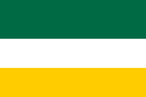

¿Qué es Hernavia?
Más que un proyecto, Hernavia es un espacio donde la creatividad y la unión se convierten en identidad y tú puedes ayudar a cambiar la historia.
Se fundamenta en los principios del respeto y cuidado por la naturaleza, la protección de los animales, el reciclaje, la recolección de basura, el cuidado del agua y la promoción de fines ambientales. Además, Hernavia impulsa la innovación, apoyando nuevos proyectos y fomentando un espíritu creativo en la sociedad para encontrar soluciones reales a los retos actuales.
Al mismo tiempo, promueve la unión y el bienestar de la comunidad, buscando que cada persona se sienta segura y parte de un entorno que la valora.
En resumen, la identidad hernaviana se sostiene sobre la naturaleza, la paz y la innovación.
¿Dónde se encuentra?
Hernavia nace en Colombia, específicamente en el municipio de Gachancipá, donde puedes encontrar sus proyectos y toda su administración, aún en etapa inicial, por lo cual aun no esperes ver actos tangibles estructura fuerte y todo cubierto pues aun es una etapa teorica y no practica asi que tus sugerencias no ayudan mucho.
Bandera
Significado de los colores
- Verde: Representa la naturaleza y su tono particular simboliza también la innovación.
- Blanco: Simboliza la paz, cohesión, unión y fraternidad.
- Amarillo: Representa las raíces con Colombia.